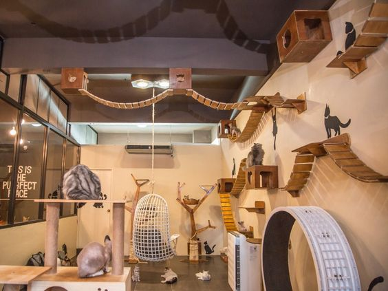
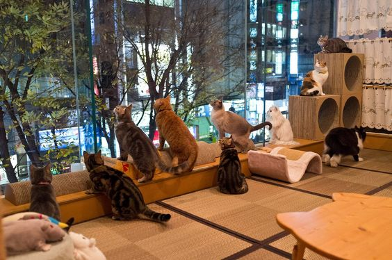

At Gato Cat Café, we believe that every cat deserves a loving home and that spending time with these incredible creatures can bring immense joy and comfort to our lives. Our café is home to a carefully curated group of rescue cats, each with their own unique personalities and stories. We work in partnership with local animal shelters to provide a safe and loving environment for these adorable furballs, giving them a second chance at finding their forever homes. The moment you step into our café, you'll be greeted with a chorus of delightful meows and friendly whiskers. Our expertly trained staff ensures that both the cats and customers have a harmonious experience, allowing our furry friends to roam freely and interact with visitors who are willing to share a bit of love and attention. While our feline friends are undoubtedly the stars of the show, we also provide a tranquil atmosphere for those seeking a relaxing space to read, work, or socialize with friends. Cat-themed décor, cozy seating, and soft ambient music set the stage for an experience that will leave you feeling refreshed and rejuvenated.

